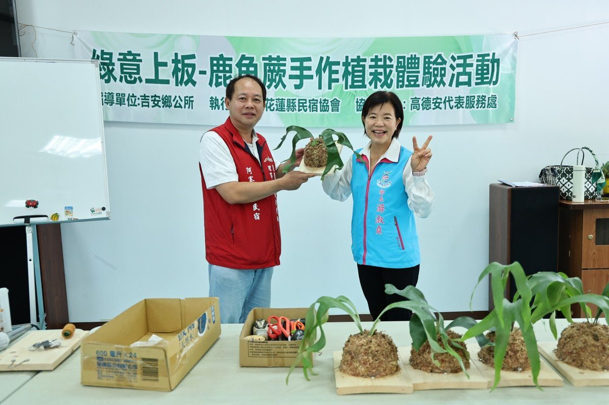

花蓮吉安推動鹿角蕨植栽體驗 創造綠色觀光新魅力

可樂電子報小編/編輯
為推廣綠色生活美學，由吉安鄉公所指導，花蓮縣民宿協會承辦的「綠意上板－鹿角蕨手作植栽體驗」活動，日前於吉安好客藝術村6號館登場，吸引眾多民宿業者踴躍參與，在專業講師帶領下，親手完成鹿角蕨上板作品，感受綠植藝術的療癒魅力。

吉安鄉長游淑貞長期支持在地社團辦理兼具創意與教育意義的藝文活動。本次活動結合植物生態、環境綠化與手作體驗，讓學員認識鹿角蕨的生長特性及養護技巧，透過DIY創作，將自然綠意融入居家與民宿空間。花蓮縣民宿協會理事長林徐則鈾感謝鄉公所支持與指導，期盼藉由綠植藝術推廣慢活美學，提升花蓮觀光住宿的生活質感，未來也將持續辦理相關課程，提升民宿服務品質。

吉安鄉民代表高德安表示，感謝鄉長游淑貞積極推動鄉政，所會合作無間，不論建設或活動推展皆展現高度默契，期待未來持續深化縣鄉合作，共同打造更優質的生活環境。

家中種植多株鹿角蕨的游淑貞鄉長也分享植物帶來的生命教育。鹿角蕨缺水時葉片會自然下垂，只要適時澆灌便能恢復生機，如同人生在關懷與陪伴下重拾力量；成熟後更會散播孢子、繁衍新生命，象徵生生不息的希望與幸福。此外，她也特別感謝代表會在執政7年多的日子支持鄉政運作，讓鄉預算由3億元成長至9億元，在所會和諧合作下，得以推動更多元的文化、教育與休閒建設，創造亮眼施政成果。

游淑貞強調，公部門經費來自全民納稅，各項活動秉持資源共享、全民共好的精神，不分鄉鎮，歡迎全縣鄉親共同參與；同時也呼籲民眾面對網路資訊應理性查證、不信謠、不傳謠，共同營造互信共榮的社會環境。
吉安鄉公所表示，未來將持續推動多元藝文與手作活動，讓藝術、美學與綠色生活深植社區，打造幸福、慢活且永續的宜居吉安。